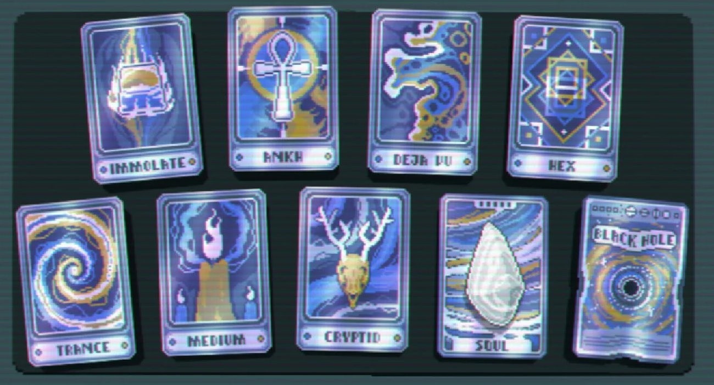

The last consumable type in Balatro is the spectral card. All of these are massive upgrades from the
tarot cards, making them rarer and being found in their own packs. The spectral cards in Balatro are
The Familiar, Grim, Incantation, Talisman, Aura, Wraith, Sigil, Ouija, Ectoplasm, Immolate, Ankh, Deja Vu,
Hex, Trance, Medium, Cryptid, The Soul, Black Hole.

Familiar:
Familiar destroys 1 random card in hand and adds 3 enhanced face cards.
Grim:
Grim destroys 1 random card in hand and adds 2 enhanced aces.
Incantation:
Incantation destroys 1 random card in hand and adds 4 enhanced numbered cards to your hand.
Talisman:
Talisman adds a Gold Seal to a selected card in hand
Aura:
Aura adds Foil, Holographic, or Polychrome to a selected card in hand.
Wraith:
Wraith creates a random Rare joker and sets money to $0.
Sigil:
Sigil changes all cards in hand to a single random suit.
Ouija:
Ouija converts all cards held in hand to a random rank. Also subtracts 1 from hand size
Ectoplasm:
Ectoplasm adds Negative to a random joker. Also subtracts 1 from hand size and it scales.
Using it the first time only subracts 1, but the next use will subtract 2, then 3, so on so forth.
Immolate:
Immolate destroys 5 random cards in hand and you gain $20.
Ankh:
Ankh creates a copy of a random joker and destroys all other jokers. But it does remove Negative from the copies joker if it has it.
Deja Vu:
Deja Vu puts a Red Seal on a selected card.
Hex:
Hex adds Polychrome to a random joker and destroys all other jokers.
Trance:
Trance puts a Blue Seal on a selected card.
Medium:
Medium adds a Purple Seal to a selected card held in hand.
Cryptid:
Cryptid creates 2 copies of a selected card in your hand.
The Soul:
The Soul creates a random Legendary joker! Can also be found rarely in Arcana packs.
Black Hole:
Black Hole levels up all hand types by 1 level! (Basically using all planet cards at once!) Can also be found in Celestial packs.
Now you know what Spectral cards to use and the consequenses of some of them, use them in moderation and just win!